Índice
Anécdotas de viaje
Guiri perdido: Edición Vietnam
LukiluLa escapada
Mi novia y yo nos encontrábamos en Vietnam.
Llevábamos varios meses viajando juntos y acabábamos de dejar atrás a unos amigos con los que habíamos estado dos semanas. Soy una persona extrovertida, pero en esos días me apetecía pasar un tiempo a solas con mis pensamientos.
Se me metió en la cabeza alquilar una moto, prepararme una mochilita, y perderme dos días por las montañas solo. ¡Pues a ello! Encontré a un hombre que me alquiló una moto y me aconsejó más o menos qué carretera podía tomar.
El 11 de enero partí del pueblo de Đà Nẵng con una moto, bajas expectativas y una actitud medianamente buena.
Al salir del pueblo, me di cuenta rápidamente de que el viaje que tenía en mente (una ruta más o menos circular) no era habitual para alguien con mi aspecto (nota para el lector: mi aspecto es no-vietnamita). Al circular por la calle, todo el mundo se paraba a mirarme. Todos los niños me saludaban o tiraban de la manga de su madre para señalarme: el misterioso hombre pálido, alto, perdido en moto. A medida que me adentraba en las montañas los pueblerinos se ponían más y más confusos al verme..
Territorio desconocido
El viaje fue realmente precioso y me enseñó una belleza única de Vietnam. Podría escribir otro relato entero sobre la belleza de la naturaleza y cultura Vietnamita.
Encontré un sitio para pasar la noche y me desperté al día siguiente para completar el círculo y regresar a casa.
Un apartado: partes de Vietnam se mantienen en un profundo aislamiento social. Muchas comunidades en estas montañas descienden de antiguos grupos que huyeron del sur de China en busca del aislamiento total para proteger su autonomía, desarrollando sistemas cerrados y aparte de los centros urbanos.
Llegué a una carretera que dejó de serlo. Después de varios kilómetros, a medida que subía y subía, se convirtió en un camino por el que obviamente no circulaban motos. Tras recorrer el tramo más solitario del viaje, comprobé que el Google Maps se había quedado sin internet. Me puse a pensar en lo importante que era no salir de la navegación, pero como la vida es una sinvergüenza que te fastidia por diversión, en ese momento le di, sin querer, a salir de la navegación. Así que me encontré perdidísimo en el medio de un bosque, en una montaña remota de Vietnam.
Por culpa de la curiosidad y la buena fe, decidí seguir el caminito por el que iba. Se cerró mucho el paso y me encontré en un bosque con apenas suficiente espacio para mi moto. Después de un largo trayecto se volvió a abrir el camino. Seguí adelante con bastante miedo y con la certeza de que estaba más que perdido en ese momento.
Me acerqué a un pequeño puente de madera, claramente hecho a mano, y lo crucé para atravesar un pequeño río. Al otro lado vi a mis primeras personas en horas: dos niños completamente desnudos. Al cruzar me miraron, pero no con una mirada de “¡Wow! ¡Una persona blanca como en las pelis!”, sino más bien un “¿Esta cosa qué es?” (puro miedo). Los niños en bolas no me saludaron y yo continué adelante.
Empecé a ver una pequeña aldea cuyas casas eran todas de barro y con techos de paja. Estas casas estaban todas en un círculo y rodeaban un edificio más grande que el resto, decorado con algún adorno detallado. Al acercarme, vi a una señora trabajando en el campo.
Ella en su prado, con pocos dientes, descalza, vestida con un vestido tejido a mano; yo con mis Nikes, el casco puesto, sobre una moto y con mi IPhone en la mano.
El camino no parecía continuar más allá de este pueblo y me vi en la necesidad de pedir ayuda, ya que seguía sin cobertura. En el momento en el que me vio, dejó lo que estaba haciendo. Me empecé a bajar de mi moto y se podía sentir la tensión con la que me miraba. Casi diciendo, como los niños, “¿Esta cosa qué es?”.
Me acerqué e intenté hablarle con el poco vietnamita que conocía, pero me di cuenta de que ella no lo hablaba, ni siquiera reconoció ningún pueblo o ciudad cuando le pregunté por ellos.
Estaba hablando con alguien con tan poca interacción fuera de este pequeño valle, en este sitio tan difícil de alcanzar, que no sabía el idioma nacional ni las grandes ciudades o pueblos que tenía a sus alrededores.
Vino un hombre, incomodado por el hecho de que un alienígena intentaba hablar con su mujer. Tuvimos la misma interacción, en la que él no entendió nada y yo tampoco.
En ese momento me di cuenta de lo jodido que estaba. Hasta en el rincón más perdido de Vietnam había visto siempre una moto, pero este sitio carecía de ellas. Me empezó a entrar un miedo algo más serio: eran más o menos las cinco y solo me quedaban tres horas de sol.
Intenté moverme por la pequeña aldea, vi a más y más gente y cada persona parecía, más que confundida, aterrorizada por el hecho de que estuviera yo ahí. Empezaron a salir personas de sus casas a mirarme, con los hombres medio desnudos. Traté de seguir un sendero que parecía salir del pueblo, pero me dejó detrás de una casita aislada donde había cuatro chicos adolescentes fumando.
El aventurero tiene suerte
Tras un momento de pánico, di la vuelta y regresé por donde había venido durante un par de horas sin saber si iba bien. Por suerte, alcancé una carretera real, conduje a contrarreloj hasta cruzar un puente colgante y recuperé la cobertura móvil.
Me pasé las dos horas siguientes conduciendo de vuelta a Đà Nẵng con una sensación súper extraña, a la que no le sé poner palabras.
Al llegar de vuelta a nuestro hostal me encontré con mi novia. Ella me contó que había tenido unos últimos dos días muy aventureros, ¡ya que se había comprado un vestido super mono hecho a medida! Y ciertamente, el vestido era monísimo. Los dos compartimos nuestras historias con un nivel de entusiasmo muy parecido.
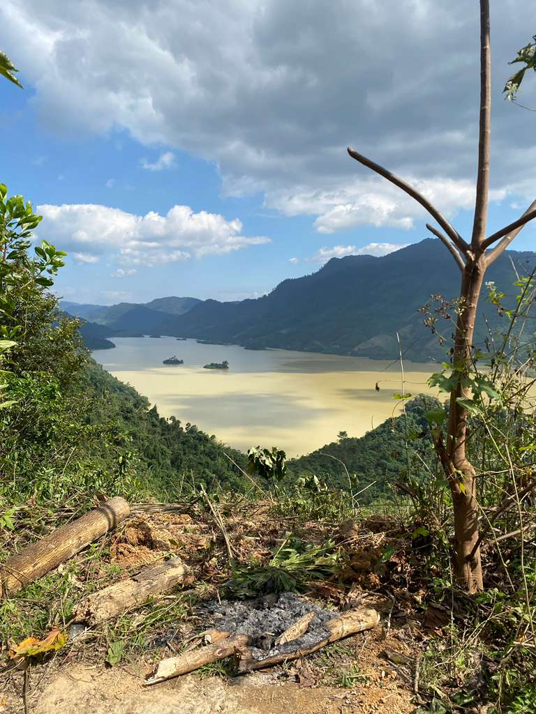
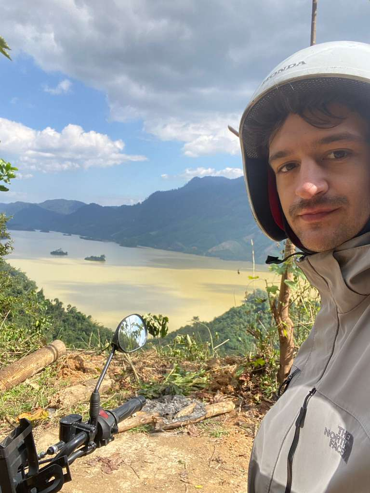
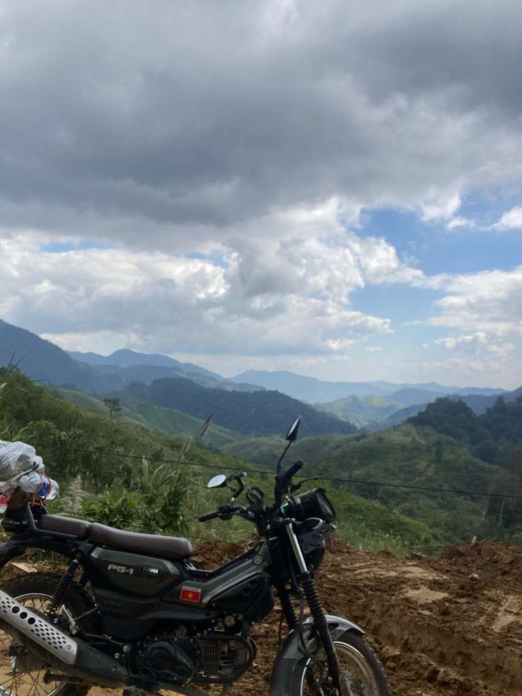
Sto. Meñique
RegrepsaEn un momento de la historia en el que los lugares más populares van perdiendo identidad, víctimas del turismo masificado y la globalización, dejando cada vez menos espacio a los propios habitantes de esas ciudades, una de las mejores formas de viajar y vivir la experiencia real de cómo son esos lugares es ir a visitar a algún amigo o familiar. Muchas veces pierdes la oportunidad de visitar los sitios más conocidos y relevantes, pero acabas apreciando esas “misiones secundarias” que luego recuerdas incluso con más afecto.
Si me dicen antes de subirme al autobús con destino a Granada que acabaría recorriendo sus calles siendo parte de una procesión, no me lo hubiese creído. Una vez entendí el contexto de esa procesión, la cosa cambió.
En este caso, fui a visitar a una amiga que vivía en pleno Albaicín. Lo que parecía que iba a ser un finde viendo los clásicos atractivos de Granada se tornó en una experiencia completamente surrealista para cualquier persona ajena al lugar.
La mañana siguiente a mi llegada estábamos desayunando y planificando el día cuando llegó un mensaje que desmontó los planes por completo: “Como cada año, quedan convocados a la procesión del Santo Meñique Incorrupto de Granada”.
Existen distintas versiones por Granada sobre cómo se desarrolló esta peculiar tradición. Sin embargo, el origen es uno, el de un granadino conocido como Chemi que tuvo un accidente de moto que le costó el dedo meñique del pie. Fue imposible volver a unirlo a su cuerpo, por lo que se lo devolvieron conservado en formol.
Una de las versiones que se cuentan dice que, tras el accidente, Chemi estaba bastante deprimido. Sus amigos, para animarlo, decidieron disfrazarse y organizar una especie de funeral para el meñique. Con el paso de los años aquello se convirtió en un ritual y poco a poco fueron incorporando distintos símbolos religiosos alrededor del dedo: un panteón, velas, estandartes, etc.
La cosa llegó hasta tal punto que empezaron a sacarlo a la calle en procesión, como si de una cofradía se tratase. Con el paso de los años se fue uniendo cada vez más gente y empezaron incluso a aparecer nuevas cofradías y hermandades, como por ejemplo la “Hermandad de la Gamba Adoradora del Santo Meñique”.
Chemi terminó instalándose en una casa del Albaicín conocida como el “Carmen del Meñique”, que hoy funciona como punto de partida de toda esta particular adoración al Santo Meñique. Parte de la gracia de esta tradición es que se trata de una procesión casi clandestina. La convocatoria suele circular el mismo día o unos días antes por grupos de WhatsApp y de boca en boca. En ese momento, cada uno prepara su disfraz —sin ninguna temática estipulada— y sale a la calle para adorar al Santo Meñique, además de beber, comer y acompañar la procesión por el barrio.
Al volver al punto de partida, el Carmen del Meñique, aquel grupo de amigos que empezó todo en el 94 ofrece caldo de pollo, bocadillos y cervezas para todo el mundo.
De no haber visitado Granada con alguien que vive allí, probablemente me hubiese encontrado aquello por la calle sin tener ni idea de qué estaba viendo. Y, sinceramente, me habría quedado todavía más extrañado de lo que me quedé cuando me lo contaron.
París entre masones y fantasmas
Haruki MillakamiParís en febrero de 2026. Lluvia, niebla y ese sol de invierno que, contra todo pronóstico, le sienta bien a la ciudad. Lejos del postureo que te venden en Instagram, la capital francesa tiene algo interesante cuando la ves por tus propios ojos.
El núcleo del viaje fue la visita al cementerio de Père-Lachaise. Es un laberinto de piedra y vegetación, con algunas zonas bastante dejadas, y una sensación de soledad que te acompaña desde que entras. Si además te tiras horas andando bajo la lluvia, la experiencia se vuelve bastante particular. Ese día había poca gente, sonaba la lluvia contra el paraguas y, en la entrada del cementerio, nos encontramos con lo que creo que era un funeral musulmán (por los velos, aunque no conozco el rito como para asegurarlo).
Père-Lachaise no es un cementerio al uso. Puedes ponerte a andar sin rumbo y acabar encontrándote con cualquier cosa: desde una tumba rodeada de historias sobre supuestos vampiros, hasta la de la condesa Élisabeth Alexandrovna Stroganoff, de la que se cuenta que dejó en su testamento que daría un millón de euros a quien consiguiera pasar 365 días y 366 noches encerrado en su mausoleo, junto a su ataúd y sin salir. Creo que la historia es demasiado buena para ser verdad, pero ahí queda. También está la tumba del creador de la homeopatía. Buen negocio le salió, porque para algo le dio para una lápida bastante digna.
Y, por supuesto, Jim Morrison. Paradójicamente, su tumba es de las que menos impresionan del cementerio. Está rodeada de vallas, pegatinas y toda clase de mierda que deja la gente. Incluso había chicles pegados en un árbol. Bastante desagradable.
Fuera de los muertos, la gastronomía local nos salvó el viaje. Iba con expectativas bastante bajas y algunas cosas me sorprendieron para bien. Pocas cosas apetecen más con frío que meterte en un bistró con los cristales empañados y pedir una sopa de cebolla caliente con el queso derretido hasta el fondo. Estaba buena. Los croissants por la mañana también cumplen. Y el azúcar lo saben trabajar. Por ejemplo, el chocolate caliente que me tomé en la cafetería del Petit Palais: denso, cremoso y muy bueno. Esperábamos encontrarla llena porque se había hecho viral en Instagram, pero no fue así. Recomendado, tanto por mí como por la cantidad de señoras que había dentro.
Otra parada que se quedó grabada fue la iglesia donde se guarda el fémur de María Magdalena. El sitio impone: poca luz, olor a iglesia y una cantidad considerable de símbolos masónicos (esto a Fran le gusta seguro). Otra iglesia menos conocida pero que merece la pena es Saint-Severin. Tiene un pilar que parece directamente un árbol de El Señor de los Anillos.
De ahí al Panteón hay un cambio de escenario, pero no tanto de intención. Napoleón cogió el edificio, lo convirtió en mausoleo de “grandes hombres” y dejó encima aquello de “Aux grands hommes, la patrie reconnaissante”, para que quedara claro quién decide qué se recuerda y cómo. Ole por él. El tío no se cortaba un pelo a la hora de vender la grandeza de Francia.
En cambio, mantengo mi postura con el vino francés: mucha reputación, mucha historia y mucha ceremonia con la copa, pero tengo la sensación de que buena parte de la épica la pone el escenario más que el propio vino. Y los parisinos, cuando quieren, son unos tiesos de cuidado. Entramos a cenar a la Brasserie des Prés y dejamos el paraguas del Mango en el paragüero de la entrada, que estaba hasta arriba. Al terminar, fuimos a recogerlo y allí estaban todos los paraguas de la brasserie menos el nuestro. Se ve que Mango es caro y a algún parisino le pareció una buena oportunidad. La diplomacia tiene sus límites, así que tocó aplicar el ojo por ojo, paraguas por paraguas.
Ah, y si pedís saucisse, que sepáis que no es salchicha. Es fuet.
Para rematar el viaje, la subida a Montmartre. Bonita, las cosas como son. Perderse por las cuestas empedradas y las fachadas antiguas tiene su encanto, aunque se pierde un poco cuando te das cuenta de que cada dos minutos te cruzas con alguien de tu propio pueblo haciendo exactamente la misma foto que tú.
Al final, París en invierno hace frío, te obliga a delinquir por un paraguas y te deja bastante claro que no todo lo que tiene fama está necesariamente a la altura. Pero merece la pena.
Sobre todo por esa sopa de cebolla.
PD: las escaleras del metro resbalan.
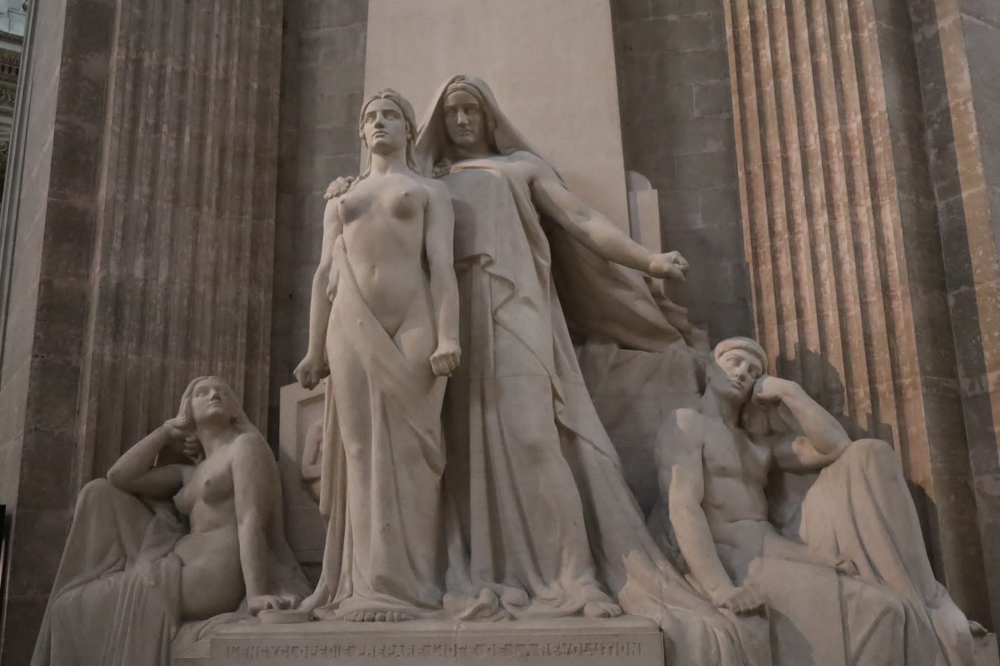
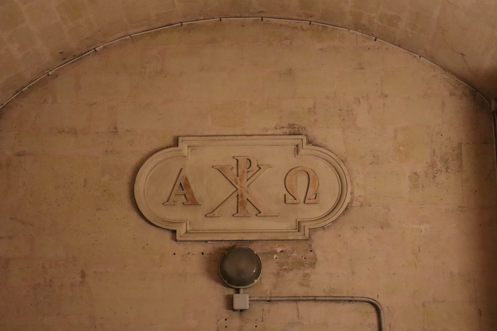
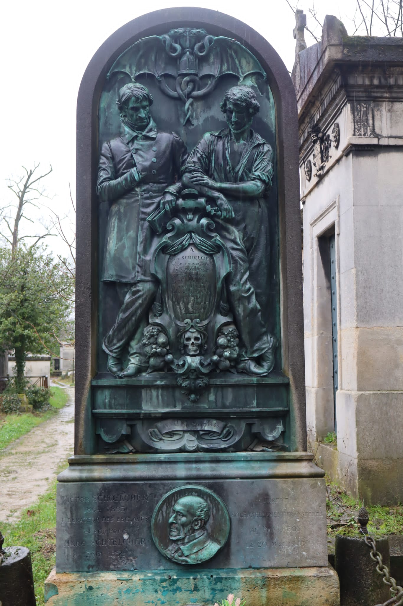
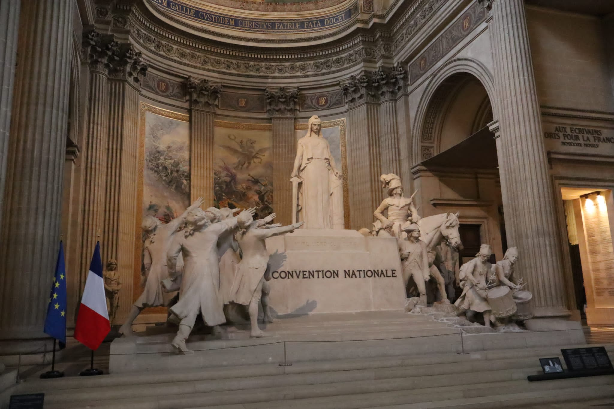
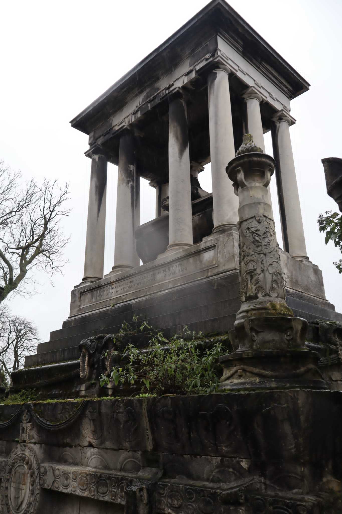
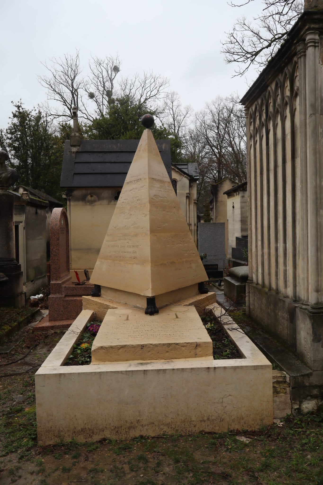
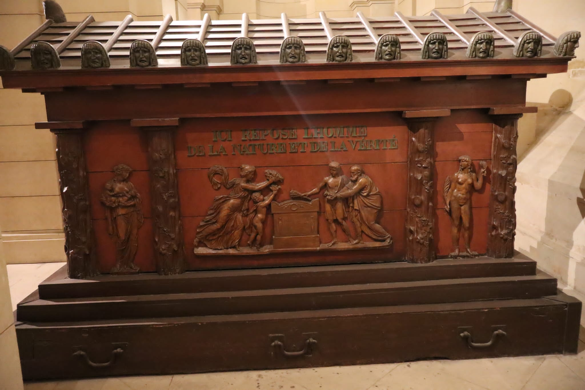
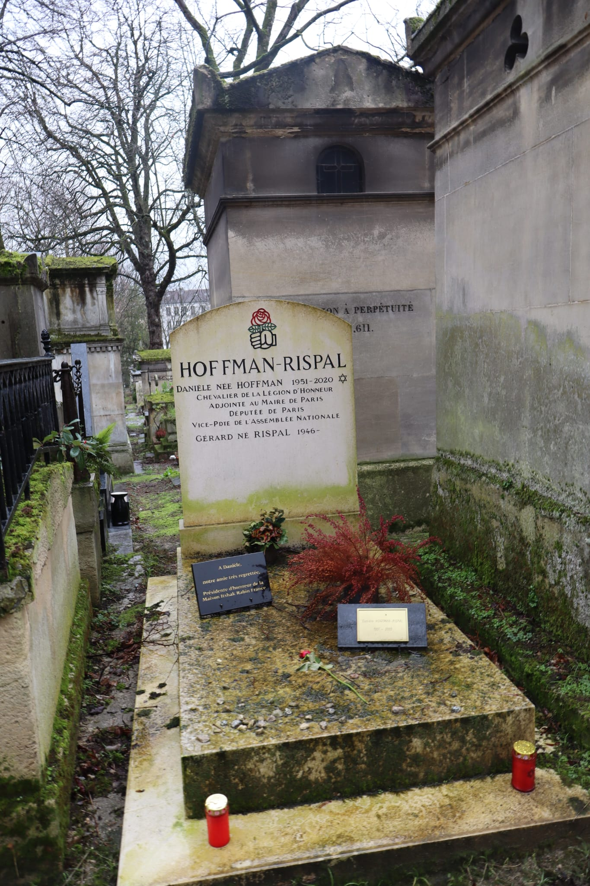
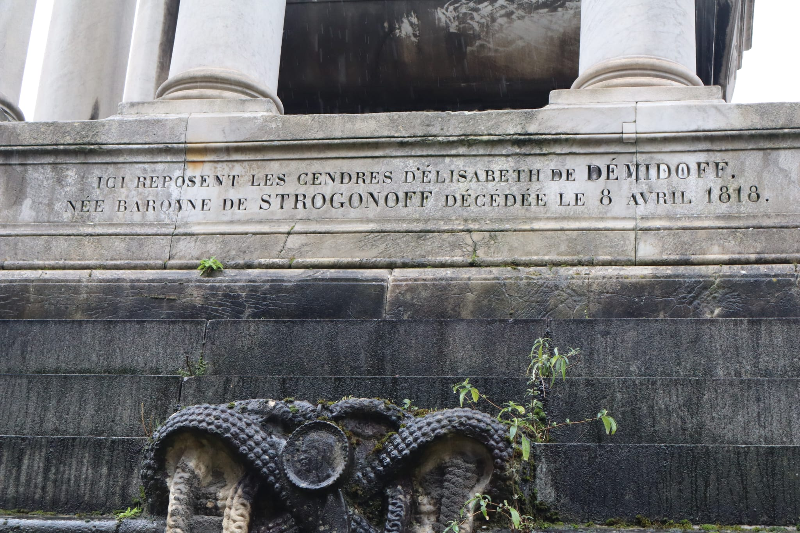
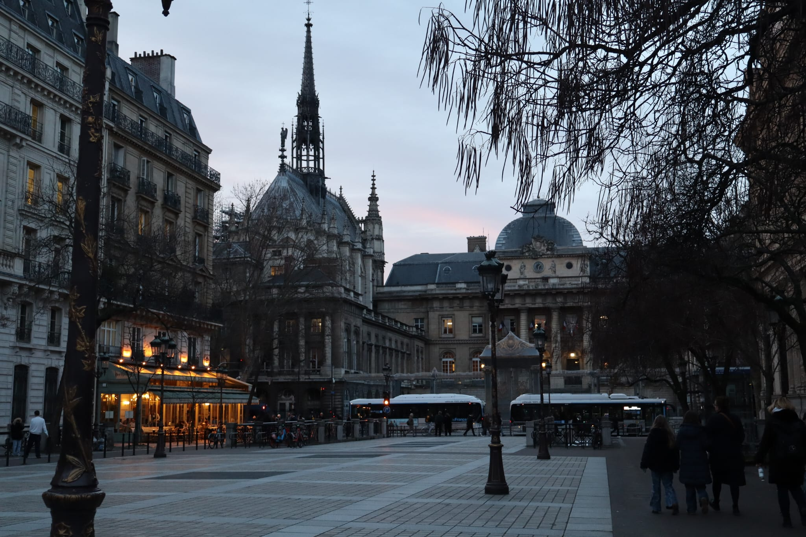
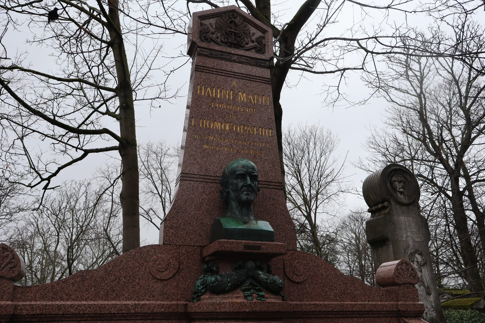
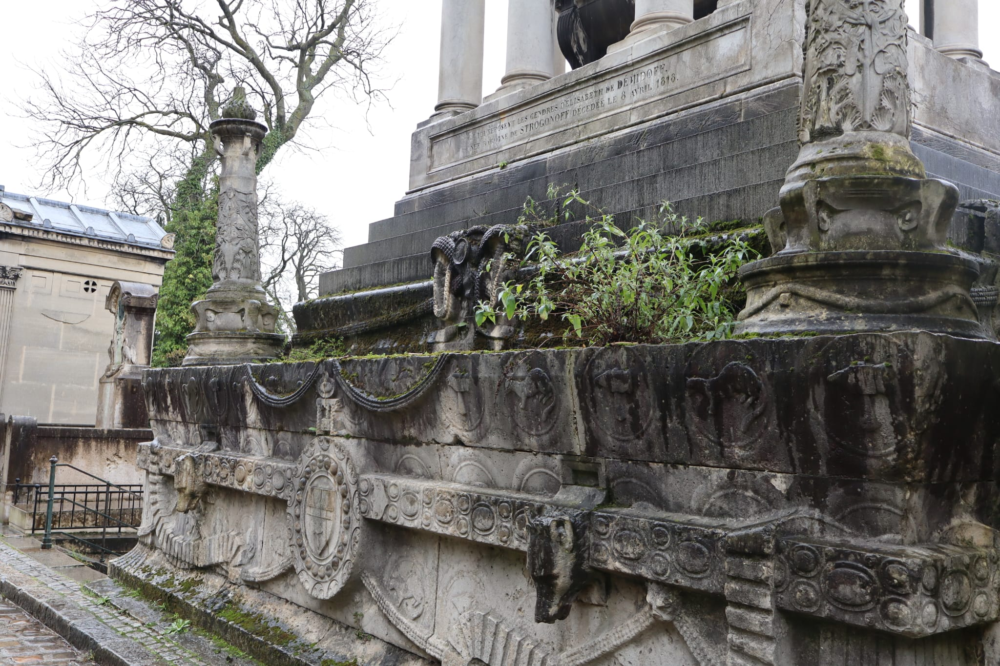
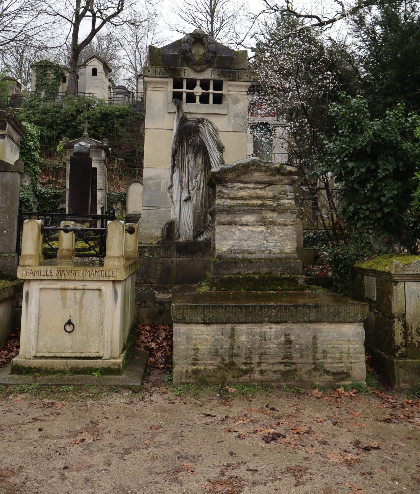
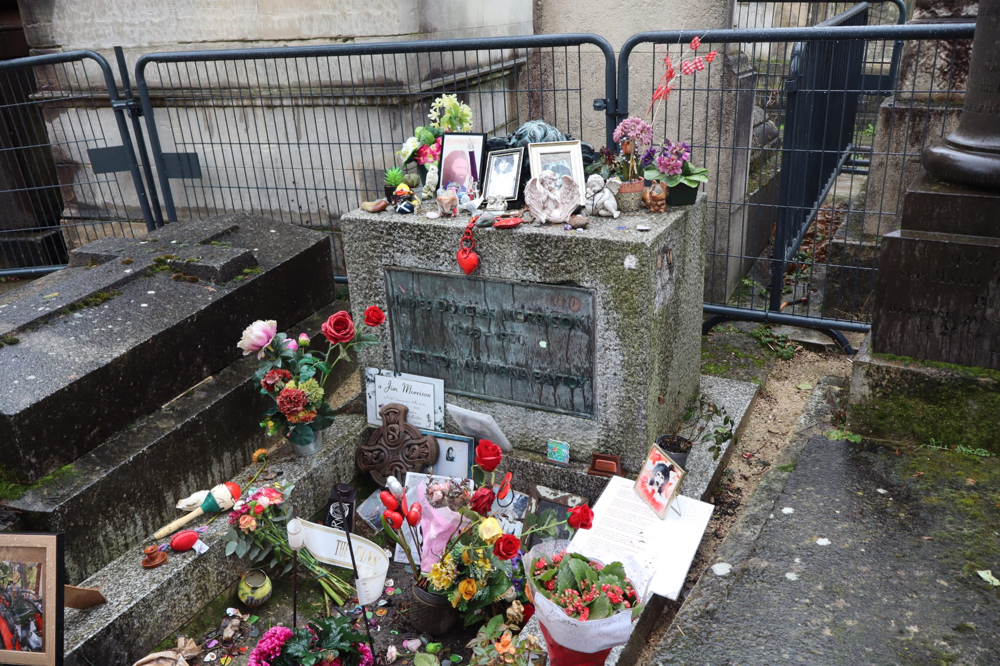
No podemos ser esclavos de la meteorología
el chivoLlevas meses planeando un viaje a Lofoten (Noruega) y cuando se acerca el momento abres tu aplicación de confianza del tiempo y te sale lo peor: todos los días nublados, lluviosos y ventosos. Y entonces maldices haber elegido de viaje de verano ir al círculo polar ártico.
Pero claro, ¿qué esperar tan arriba, no? Esto no es Ibiza. Y así es como empecé a cambiar el chip. Es tan idílico pensar que tu viaje se va a ver igual que en la revista de National Geographic, que te olvidas de que la meteorología tiene sus propios planes y no cambia por ti. Tienes que adaptarte a ella, si te mojas te mojas, ya cenarás una sopa caliente y te recuperarás del resfriado. Afortunadamente, en las Islas Lofoten la geografía es tan particular, que hace que la predicción meteorológica sea de lo más incierta: aunque parezca que se va a caer el cielo, siempre acabas viendo un poco de cielo azul en algún momento. Adaptamos nuestros planes y así pudimos disfrutar de uno de los paisajes más bonitos que he visto nunca. Una naturaleza muy cuidada, muy diferente y salvaje. Fiordos infinitos, pueblitos preciosos y agua tan cristalina como helada. Hicimos cuatro rutas, aunque la idea inicial era hacer cinco. Pero el primer día tuvimos que darnos la vuelta cuando subíamos a Floya ya que había visibilidad 0. Volvimos el ultimo día y la pudimos terminar.
Los noruegos tienen un concepto que admiro mucho: Friluftsliv. Es una filosofía que consiste en conectar con el mundo natural de una forma respetuosa y sencilla. En los días en los que estuve allí, no vi ninguna basura tirada por la montaña ni ningún altavoz con música a todo volumen. Me emocionó ya que es una cosa que me saca de mis casillas cuando paseo por ejemplo por la Costa Quebrada y encuentro todo tipo de rastro humano en cada esquina o me toca escuchar música que no he elegido.
Teníamos la ilusión de ver orcas y alces. Las orcas se hicieron de rogar y no las pudimos ver. Un alce despistado sí que se dejó ver justo antes de llegar al aeropuerto cuando nos volvimos. ¡No sabéis qué ilusión!
Tengo la teoría de que cuando un plan se tuerce debido a las condiciones meteorológicas, significa que tengo una cuenta pendiente y que volveré. Así, una regresa contenta con la esperanza de volver y de ver lo que fue tapado por una nube.
Orcas de Lofoten: volveremos a por vosotras.
Termino con un refrán noruego que no me puede venir mejor:
“det finnes ikke dårlig vær, bare dårlige klær”: no hay mal tiempo, solo ropa inadecuada.
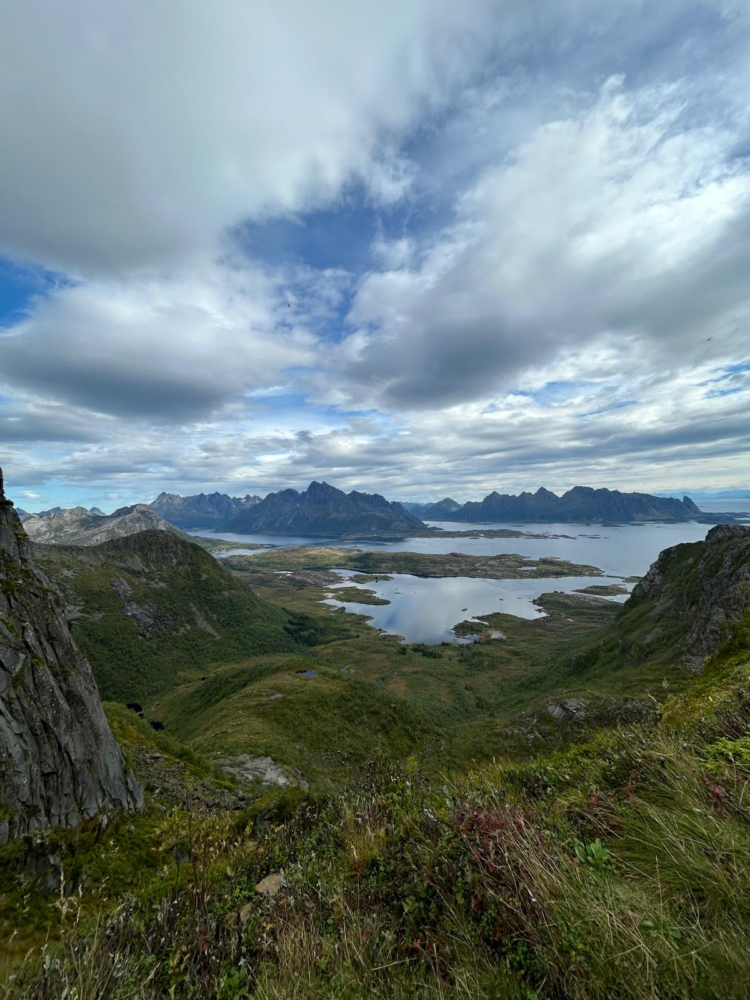
Crónica de un lemon anunciado
R. PiernabutanoEntre los siglos XVII y XIX se extendió una curiosa costumbre entre la aristocracia europea. Esta costumbre se extendió tanto que le dieron un nombre propio, Grand Tour, y tan grandilocuente nombre tenía que ser por algo serio: un viaje alrededor de Europa para que las élites intelectuales de la época terminaran su formación al inicio de la vida adulta. Con este objetivo, el punto culminante del viaje no podía estar en otro sitio que a orillas del Mediterráneo, más concretamente en Italia. Encarnando el espíritu de aquellos intelectuales como Goethe, Stendhal o Mary Shelley, con una mochila llena de sueños, hambre de pizza y borracheras de negroni, una delegación de FranBasket ha viajado hasta el Bel paese para disfrutar de sus infinitas riquezas y relatároslas en nuestro Boletín favorito.
Nuestro primer destino era Matera, pero, como en las grandes historias, el camino estaba lleno de oscuridad y de constantes peligros: un viaje a Bilbao, dos vuelos, cuatro horas de retraso, un coche en dirección contraria en una rotonda napolitana y dos horas y media de autovía italiana con Edu del Río al volante. Sin embargo, los protagonistas de estas historias no pueden rendirse y fue así como llegamos a esta bella ciudad de la región de Basilicata. Como el espacio es limitado y no quiero robárselo a Millakami, nos saltaremos estos días. Probablemente fue el lugar en el que más a gusto estuvimos, pero la comodidad siempre fue enemiga de la narrativa.1
Desde Matera viajamos para quedarnos cuatro noches en Grottole, un pequeño pueblo de apenas dos mil habitantes en la misma provincia. El lugar era ideal: un pequeño pueblo levantado en lo alto de una montaña con casco histórico, unas preciosas ruinas de lo que antaño fue una iglesia, un castillo en un alto que ofrecía la mejor vista del pueblo y un bar con terraza que vendía el tercio de Peroni a euro cincuenta. Cuando el último día estábamos barajando empezar una nueva vida en tan idílicas tierras, llegó el mejor momento del viaje: conocimos al alcalde del pueblo, Filippo, y a su mujer. Le impactó tanto tener a cuatro españoles allí que nos invitó a hablar con él esa noche en la fiesta del pueblo, y debimos parecerle tan interesantes que acabamos a la mañana siguiente desayunando con todo el equipo de gobierno en el ayuntamiento. Como esto suena surrealista, adjunto a continuación una foto:
Por muy a gusto que estuviéramos aquí, cuatro días en Grottole son molto longo, así que la idea era utilizarlo como centro de operaciones para movernos por otros muchos pueblos de la zona: Ginosa, Montescaglioso, Castelmezzano, Metaponto, Pietragalla… casi todos ellos muy recomendables y cada uno con un encanto particular que lo hacía diferente del resto. Si tuviera que destacar uno sería Sant'Angelo Le Fratte, un pueblo lleno de murales preciosos y al que tendremos que volver para hablar con nuestro amigo Mario, un tano rioplatense al que guardamos un cariño especial. Preguntadnos por él.2
Hasta aquí tuvimos un viaje de lo más particular, pero no queríamos marcharnos del país sin abrazar la charca y hacer un poco de turismo más convencional. Así, abandonamos el turismo rural y partimos por la jungla de asfalto napolitana hacia la ciudad de Parténope, cuna de la pizza y del mito del número 10 más famoso de la historia del deporte. Si el lector lo permite, vamos a aparcar el tono jocoso: lejos de entrar a una película de Paolo Sorrentino, la realidad se impuso y la ciudad nos recibió con basura acumulada en las calles, edificios desconchados llenos de pintadas y un ambiente de pobreza generalizada, al que tampoco ayudó el mal olor levantado por la tormenta que estalló nada más llegar. Pensé que nos habíamos equivocado de destino, que la ciudad no era para mí, pero lo que pasaba es que Nápoles no se entrega a la primera: por encima de la suciedad, los colegios enrejados y los niños en moto se alza una belleza que grita que esa ciudad fue muchísimo más. Los museos, castillos, palacios, algunas de las iglesias más bonitas que hemos visto jamás, una catedral que nos dejó sin palabras, una bahía impresionante o una gente de lo más acogedora (y siempre con una palabra de cariño a España y a nuestro pasado común) son sólo algunos de los galones que porta esta ciudad tan especial, ciudad que fue la capital de un reino y a la que, siglo y medio después, siguen sin perdonarle haberlo sido.
Finalmente, tras varios días de callejeo intenso, ruinas romanas y una vista de ensueño de esta noble ciudad desde el monte Vesubio, cogimos un vuelo hacia Venecia para encarar el epílogo de esta historia. Tras un intento fallido de ver una exposición de los Jojo’s, un paseo y un McDonald’s, nos volvimos al apartamento para pasar nuestra última tarde entre cervezas y un musical de la Odisea. No esperaríais que os hablara de Venecia, ¿no? Si algo sobra allí, son españoles.
Y con esto damos por concluida la historia. No sé qué partido le sacaron Goethe y compañía a su Grand Tour por la tierra de Dante y Petrarca, pero seguro que no lo disfrutaron tanto como estos cuatro españoles. Ellos volvieron a casa con la lección aprendida; nosotros, con un hermano alcalde, amor por el Aperol Spritz y un respeto incondicional a los conductores españoles.
Ensayos sobre viajar
Anthony Bourdain y sus preceptos del turismo humano
Juliábriga«Viajar no te hace mejor persona por arte de magia, pero te da la oportunidad de serlo (...)» - Anthony M. Bourdain.
¿Se puede realmente viajar de forma ética? Es difícil no plantearse ciertas cuestiones cuando tienes la suerte de viajar como hobby, como es mi caso. Tiendo a pensar mucho en la ética de lo que hago, y en la ética de lo que hacen los demás (esto último siempre es más fácil), así que, mientras preparo la maleta para mi próximo viaje, se me vienen a la cabeza algunas dudas. Leer sobre cómo las comunidades locales sufren cada vez más las consecuencias del turismo de masas no es agradable, y sentir que, aunque sea en una ínfima parte, yo estoy contribuyendo a ese problema, menos aún.
Aun así, no me atormenta lo suficiente para disuadirme de viajar. Sigo con mi maleta. Siempre he querido conocer Berlín.
Ni siquiera recuerdo la cantidad de veces que he escuchado el argumento de que hay sitios que "viven del turismo", pero definitivamente muchas más de las que me gustaría...
Puede que esto tuviese algo de cierto cuando el turista promedio desayunaba en el bar Manolo y no en el Starbucks que acaba de abrir en la plaza, o cuando se quedaba a dormir en un hostal y no en un piso rentado por un particular a precios abusivos. El turismo, en muchos casos, ya no fomenta la economía local, la sofoca. Y, desgraciadamente, tras la migración estival de madrileños que ocurre en mi ciudad cada año, he sido plenamente consciente de que ya no vivo los veranos de la misma manera que antes, porque hay muchas cosas que ya no puedo hacer, o no con la misma frecuencia, o no cuando a mí me gustaría.
¿Tengo derecho acaso a indignarme?
Pero si ya he viajado siete veces este año...
El turista siempre es turista y residente simultáneamente, dependiendo de dónde esté, pero cuando aparece un problema que atrae la atención mediática, lo más fácil es buscar a un culpable al que señalar (muchas veces, el culpable equivocado). Algo un poco más difícil es buscar formas de evitar contribuir al problema, y para ello hay que hacer lo más complicado de todo. Asumir que tú eres parte del problema. Esto, por supuesto, es un trago amargo, así que me dispongo a hacer lo que mejor se le da al ser humano cuando aparece un ápice de culpabilidad: buscar la forma de justificarme para no sentirme tan mal conmigo misma.
En estos tiempos tan oscuros para el turismo, se me viene a la cabeza, como una especie de profeta, una de mis personas favoritas. Anthony Bourdain, el chef punk. Siempre he tenido cierta predilección por la gente excéntrica, y él, por supuesto, no es la excepción. Lo mismo te cocinaba un solomillo Wellington que llevaba a cabo un estudio antropológico en formato de guía de viajes. Un enfant terrible de los fogones, un hombre fascinante.
Bourdain, en un intento de trascender el concepto de "viajar de forma auténtica", se guiaba por la premisa de que el viajero no debería llegar a un lugar preguntándose qué puede obtener de él, sino qué puede aprender de él. Una de sus obras que mejor resume esta filosofía es el documental Anthony Bourdain: Parts Unknown, en el que plantea la comida como puerta de entrada a una sociedad y una cultura con sus reglas particulares (súper interesante y altamente recomendado). Por ello, hoy, mientras escribo sobre esto, me acuerdo especialmente de él. A continuación os dejo un par de enseñanzas que resumen muy bien su forma de viajar (y la mía) y me recuerdan que aún es posible hacer turismo con respeto:
1. Ve al mercado (y levántate temprano para hacerlo): Los mercados centrales (especialmente en el sur global) frecuentemente son el corazón de la polis. Allí es donde ves realmente cómo se vive en el lugar que estás visitando. Muchas veces puedes probar comida callejera, comprar especias o encontrar algún recuerdo que realmente tenga algo que ver con el sitio que visitas, si llevas efectivo encima. Participa de los espacios que ocupan los residentes y entenderás cómo funciona la vida allí.
2. Vive con curiosidad: No quiero hacer el mismo viaje prediseñado milimétricamente para todo el mundo. Me despierta mucha más curiosidad un callejón bonito, una plaza no muy concurrida o una fachada histórica. La Torre Eiffel no se va a mover de su sitio, pero puede que la próxima vez que visites París, ese bar de karaoke en el que te lo pasaste tan bien ya no esté. Deja que tu curiosidad sea la brújula del viaje. Los spots más turísticos no necesariamente son los más interesantes, e ir buscando únicamente lo que ya sabes que quieres encontrar limita mucho lo que puedes descubrir.
3. Deja que el viaje te cambie: Viajar es un acto de rendición para dejar que los demás te muestren su forma de vida. Es esencial ir con la mente abierta, especialmente cuando visitas un panorama cultural radicalmente distinto al tuyo. Cuestiona tus propios prejuicios. Habla con los locales. Más importante aún, escucha a los locales. Siéntate y deja que te cuenten sobre la mejor comida local que puedes probar a buen precio, sobre sus nietos, sobre lo que se come en su casa los domingos, sobre la situación inmobiliaria en su barrio, sobre sus propios viajes... De cualquier manera, vas a aprender algo interesante y muy valioso.
4. Sé paciente y no pierdas la calma: Si algo puede salir mal, muy probablemente va a salir mal. Creo que una de las habilidades más útiles que me ha aportado viajar con asiduidad es la capacidad resolutiva. No dejes que un contratiempo te arruine el día (y, por supuesto, no lo hagas un problema de los demás). Si tiene solución a tu alcance, no es un problema, y si no la tiene, no ganas nada agobiándote al respecto. Recuerda que tienes el privilegio de viajar por ocio y no dejes que los inconvenientes opaquen eso.
5. Sé un viajero, no un turista: Dejo esta para el final, porque me parece el broche perfecto para resumirlo todo. Intenta conectar de verdad con la vida a tu alrededor. Un viaje no debería resumirse en tachar un destino de una lista. Viajar es cruzar puertas que te dan la oportunidad de asomarte a realidades muy distintas a la tuya, y creo que no hay mayor aprendizaje que ese. Aprovéchalo.
Como nota a pie de página, Anthony nos dejó, tristemente, en 2018. No vivió para ver la salida a bolsa de Airbnb, pero estoy segura de que no le gustaría para nada el panorama :(. Do better (si tienes la oportunidad) y procura no participar de una empresa que perpetúa y se apoya sobre la crisis de vivienda y la gentrificación turística. #boycottairbnb
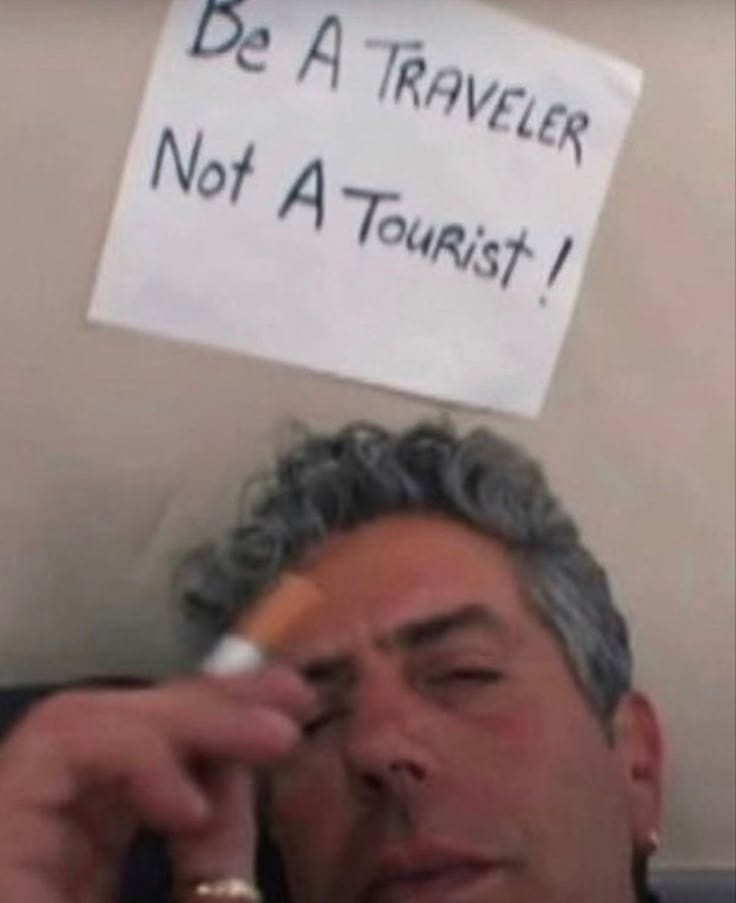
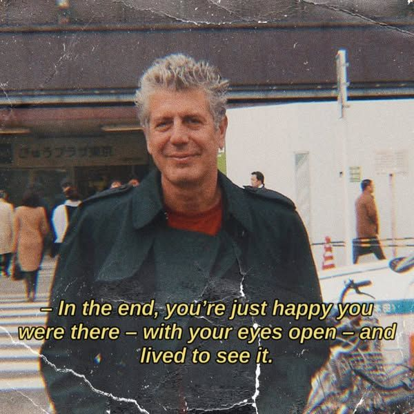
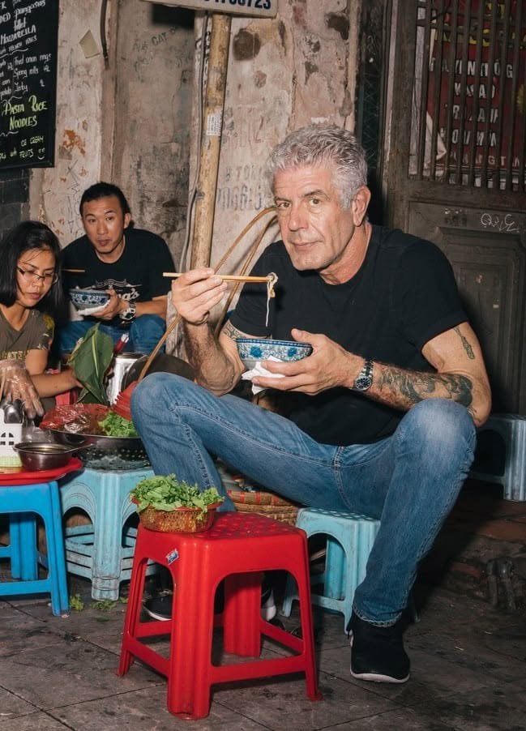
Viajar con propósito
VelatoActualmente, estoy en la recta final de un gran viaje, uno de esos que quizá solo pueda hacer una vez en la vida, ya que he empleado 6 meses de excedencia para ir en coche desde España a Singapur y no creo que me encajen así la economía, el tiempo y la energía en muchos otros momentos de mi vida. Ver el final me hace preguntarme cómo viajar a partir de ahora, por qué viajo y qué es lo que más he disfrutado, tanto en este viaje como en otros que he hecho. Quiero utilizar estas líneas para plasmar un concepto de viaje que me encaja a mí personalmente.
Para mí, viajar tiene que ser un proyecto, una aventura o un reto. No me gusta el turismo sin propósito, y sencillamente visitar un lugar no me resulta un objetivo válido.
Desde luego que conocer un lugar, sus paisajes, sus gentes o su historia es fascinante. Me parece imperdonable viajar a un país y volver a casa sin aprender nada de él, pero no le encuentro la magia si no es parte de algo más. Desde esta perspectiva, no entiendo tampoco el turismo que sea exclusivamente de playa, ocio y relax, probablemente en parte porque, viviendo en Cantabria, puedo tener todo esto sin la tortícolis del avión.
Para disfrutar de verdad un viaje necesito tener un aliciente, como puede ser un itinerario largo terrestre, ya sea en vehículo a motor, bicicleta, caballo o a pie. Me gusta el reto que me implica ir adaptándome sobre la marcha a contratiempos, que me haga temer por la integridad de mi vehículo a cientos e incluso miles de kilómetros de casa, buscar dónde dormir cada noche y buscar información constantemente sobre lo que hacer al día siguiente.
La montaña es otra de esas cosas que me motiva a hacer las maletas. En este caso, plantearme como objetivo la ascensión a una cima, completar un recorrido alpino exigente físicamente o una escalada con dificultad técnica, entre otros, me implica entrenar para ese viaje, preparar la logística y el material, o plantear alternativas si las condiciones meteorológicas no son favorables.
De esta forma, cuando consigo los objetivos que me he planteado para el viaje, siento realización personal, estoy orgulloso de lo que he conseguido y casi siempre también agotado.
Mi padre dice a veces que descansar no es no hacer nada, sino cambiar de actividad. En cierto modo estoy de acuerdo: con este tipo de viajes desconecto completamente de mi trabajo, no suelo tener tiempo para pensar en ello. Sin embargo, creo que el cuerpo y la mente sí necesitan parar a veces. En estos casos, el turismo de relax pasa a estar completamente justificado para mí. Después de días en la carretera o en la montaña, parar un par de noches en un hotel frente a la playa e incluso darme un masaje me parece la cosa más justificada del mundo. Al final, solemos vivir una rutina en la que combinar el trabajo, las responsabilidades domésticas, el deporte y socializar nos suele acabar llevando un punto por encima de nuestras posibilidades. Los 22 días laborables de vacaciones del convenio colectivo español tienen que servirnos para viajar como queremos, pero también para parar un poco.
A un mes de volver a mi rutina habitual, me estoy dando cuenta de que me gustaría encontrar algún otro tipo de propósito al viajar, más allá del overlanding y la montaña. Espero que me surja fortuitamente, porque no creo que haga grandes esfuerzos para buscarlo, pero me parece que un poco más de diversidad me podría venir bien y abrir la mente.
Quiero cerrar esta pequeña reflexión que me ha encargado Fran remarcando que no considero que mi forma de viajar sea mejor que ninguna otra, ni más ética ni más estética. Sencillamente es lo que he visto que mejor me encaja. Aun así, casi siempre acabo, al menos en ciertos momentos, como un turista más dentro de la masificación que soportan muchos lugares en el mundo, lo que me repele profundamente. Espero que estos párrafos motiven a alguien a viajar con un propósito, planteándose un reto, como si no tuviésemos ya suficientes en la vida cotidiana, y que nos encontremos por el mundo algún día.
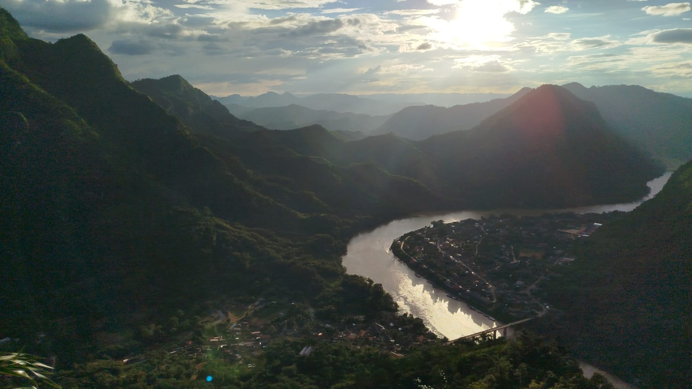
Agradecimientos
Texto de agradecimientos.
Pregunta de trivia:
¿Pregunta de trivia del mes?
Mensaje de despedida
Para sugerencias, comentarios, opiniones o cartas al director, contáctame directamente :)